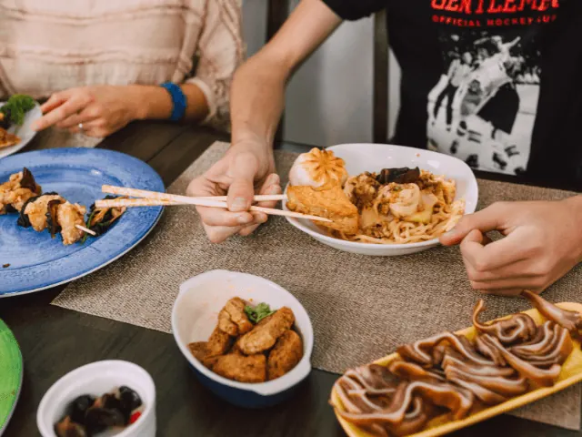
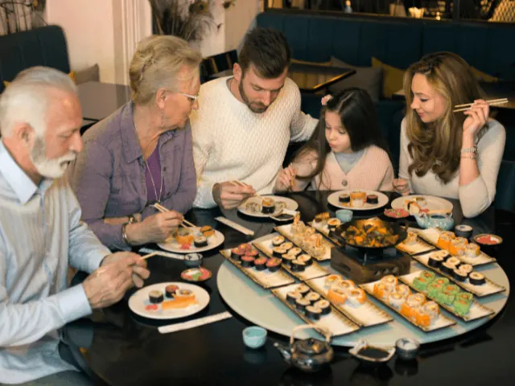
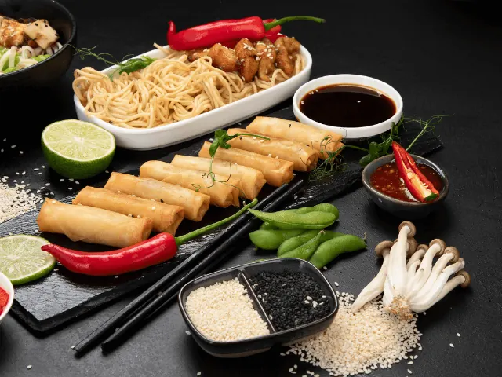

Geniet van deze Aziatische Hoogstandjes in Nijmegen
Gepubliceerd op 15 februari 2023, bijgewerkt op 20 oktober 2023
Onderdeel van de gids Restaurants in Nijmegen

Aziatisch eten is onder veel Nederlanders geliefd. Van curry’s tot noodles, voor zowel vegetariërs als vleeseters, de Aziatische keuken is enorm veelzijdig. Ons land zit dan ook bomvol heerlijke restaurants waar je kunt genieten van smakelijke Aziatische gerechten. Ook in het mooie Nijmegen vind je diverse Aziatische restaurants. Maar bij welk restaurant kun jij nu het beste terecht voor een heerlijk avondje culinair genieten?
In het centrum van Nijmegen zijn er diverse Aziatische restaurants te vinden. MIA en Izzi zijn twee populaire voorbeelden. Ook restaurant Saison op de woonboulevard van Nijmegen is een bezoekje waard. De een specialiseert zich in traditionele sushi, terwijl de ander zich juist richt op een breed scala aan verschillende Aziatische gerechten in een modern jasje.
Ben jij op zoek naar een Aziatisch restaurant in Nijmegen? Dan ben je bij ons aan het juiste adres. Wij hebben namelijk onze favoriete hotspots voor jou op een rijtje gezet. In het onderstaande artikel nemen we enkele Aziatische restaurants nader onder de loep. Wil jij binnenkort dus uit eten in Nijmegen? Dan moet je de onderstaande pareltjes absoluut in overweging nemen.
Overzicht Aziatische restaurants in Nijmegen
De beste Aziatische restaurants in Nijmegen
Ben jij reeds een groot fan van Aziatisch eten of ga je deze pittige keuken voor het eerst ontdekken? Hoe het ook zij, in Nijmegen vind je veel verschillende restaurants die de Aziatische keuken vertegenwoordigen. Wij begrijpen dat jij op zoek bent naar het restaurant met het allerlekkerste eten. Daarom hebben wij onderstaand onze favoriete Aziatische restaurants in Nijmegen voor jou uiteengezet.
1. MIA ‘Made in Asia’ Nijmegen
Het eerste restaurant dat we absoluut niet over mogen slaan is MIA. Deze afkorting staat voor ‘Made in Asia’. Dit restaurant ligt op steenworp afstand van het oude stadscentrum. Het is dus de ideale plek om neer te strijken na een dagje sightseeing in het prachtige centrum van Nijmegen.
Restaurant MIA biedt een unieke menukaart aan, met daarop heerlijke gerechten uit verschillende Aziatische landen. Van Thaise curry tot rijst uit Singapore, de menukaart is enorm veelzijdig. Gasten zijn dan ook zeer enthousiast over het ruime aanbod. Er is voor ieder wat wils te vinden op deze uitgebreide menukaart.
De ruime keuze is echter niet de enige reden dat dit restaurant bij zo velen geliefd is. Onderstaand enkele opvallende punten uit de lovende reviews van hun gasten.
- Goede kwaliteit
- Vriendelijk personeel
- Sfeervol restaurant
- Pal naast het centraal station van Nijmegen
De fantastische sfeer en het goede eten zijn absoluut kenmerkend voor dit geliefde restaurant in hartje Nijmegen.

2. Saison Restaurant Nijmegen
Een stukje verder van het stadscentrum, op ongeveer 5 kilometer afstand, vind je het Saison restaurant. Dit sfeervolle restaurant is zowel van buiten als van binnen een lust voor het oog. Van prachtig en comfortabel meubilair tot prachtige sfeerverlichting, werkelijk waar overal is aan gedacht.
Saison biedt zijn gasten een unieke beleving van de moderne Aziatische keuken. Het menu bestaat uit een breed scala aan Japanse gerechten, aangevuld met diverse Aziatische specials. Van de lekkerste grill gerechten tot een uitmuntend bord met sushi, als liefhebber van de Aziatische keuken kun jij je geluk hier niet op.
Dit restaurant probeert zichzelf te onderscheiden middels het gebruik van de beste ingrediënten en traditionele bereidingswijze. Dat proef je simpelweg direct terug in de heerlijke gerechten.
Veel gasten zijn fan van het all you can eat concept dat dit restaurant aanbiedt. Er is bovendien sprake van een goede prijskwaliteit verhouding. Vooral op doordeweekse dagen zijn de prijzen voor een all you can eat arrangement zeer schappelijk.
Saison bevindt zich op de woonboulevard in Nijmegen. Deze plek is goed bereikbaar met het openbaar vervoer, en ook is er voldoende parkeergelegenheid indien u het restaurant met de auto bezoekt.

3. Izzi
Bij het derde restaurant op onze lijst wordt het wederom culinair genieten. Maar dit keer pal aan het water, met een prachtig uitzicht over de rivier de Waal. Je kunt op een mooie dag neerploffen op het terras, maar ook binnen in het restaurant hangt er een fijne sfeer. Restaurant Izzi ligt op minder dan 10 minuten lopen van het oude stadscentrum. We hebben het dus echt over hartje Nijmegen.
In dit heerlijke restaurant worden diverse Aziatische gerechten geserveerd, die jou zonder twijfel zullen verrassen. Izzi staat echter voornamelijk bekend als sushi specialist. Alle sushi fans moeten deze plek in Nijmegen een keer uitgeprobeerd hebben. Het eten is niet alleen ontzettend lekker, maar het zijn ook ware kunstwerken. Er wordt duidelijk veel aandacht besteedt aan de presentatie, om de beleving van de gasten te optimaliseren.
Wat hebben gasten zoal gezegd over dit sushi restaurant in Nijmegen? Onderstaand een greep uit de lovende reviews.
- Zeer vriendelijke en behulpzame bediening
- De gerechten zijn stuk voor stuk een lust voor het oog
- Sfeervol met een fantastisch uitzicht
- Volgens velen de beste sushi van Nijmegen
Dat belooft wat! Wanneer probeer jij dit bijzondere Aziatische restaurant in Nijmegen?

– Orient Plaza Honyun
De laatste eetgelegenheid die ook zeker niet mag ontbreken in onze lijst is restaurant Orient Plaza in Nijmegen. Al meer dan 30 jaar is dit een vertrouwde plek voor verschillende Oriëntaalse restaurants.
Orient Plaza bestaat uit vier verschillende restaurants. Eén daarvan is specifiek gefocust op de Chinese keuken. Dit is restaurant Honyun. In dit veelzijdige Chinees Kantonese restaurant geniet je van alle authentieke gerechten uit de Chinese keuken. Van Pekingeend tot zwaluwnestjes, de mogelijkheden zijn zeer divers.
Naast het Chinese restaurant Honyun, zijn er onder het dak van Orient Plaza nog drie andere restaurants te vinden.
- Jiro (sushi&grill)
- Kyoto (Japans)
- Korea (Koreaanse bbq)
Wanneer we het hebben over Orient Plaza, kunnen we dus wel spreken van een zeer veelzijdige eetgelegenheid met daarin voor ieder wat wils.